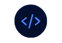

MY SKILLS
Skills & Technologies
As an aspiring Application Developer, I am focused on building a strong foundation in programming, databases, and web development. Through continuous learning and hands-on projects, I am developing the skills needed for a successful career in software development.

My Approach
I believe that the best way to learn programming is through practice and real projects. I focus on understanding concepts, building applications, and solving problems step by step. Every project helps me improve my technical skills, logical thinking, and ability to learn new technologies. I am committed to continuous learning and always look for opportunities to grow as a developer.

Technical Skills

85%

80%

85%

70%
Skills Overview
Programming
Strong in Python programming and building efficient, clean and readable code.
GUI Development
Building user-friendly desktop applications using Python-Tkinter and HTML&CSS
Database
working with MySQl databases, writing queries and managing data efficiently.
Problem Solving
I enjoy solving logic based problems and turning ideas into real solutions.
Learning
Always learning new technologies and improving my skills every day.
Version Control
Using Git & GitHub for version control and collaborating on projects.